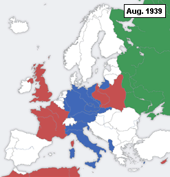

Am ersten September 1939 hat der deutsche Angriff auf Polen begonnen und markierte somit den Anfang des zweiten Weltkrieges.
Hitler versuchte Deutschland als Opfer eines Angriffes durch Polen darzustellen. Somit hat das NS-Regime nicht von Krieg, sondern von einer Strafaktion gesprochen.
Polen wurde innerhalb von 5 Wochen besiegt. Darauf erklärten Frankreich und Grossbritannien, die den Polen eine Unabhängigkeitsgarantie gegeben haben, den Krieg. Jedoch haben keine direkte Hilfe geleistet.
Die Sowjetunion marschierte am 17. September 1939 von der östlichen Grenze in Polen ein. Ein paar Wochen später wurden die Gebiete Polens unter Deutschland und UdSSR aufgeteilt.

Deutschland begann am 9. April 1940 mit Grossbritannien einen Wettlauf um Besetzung Dänemarks und Norwegen, damit sie sich die Versorgung mit schwedischem Erz sicherstellen und ihre Waffenindustrie weiterfunktionieren kann.
Die Niederlande wurde während der Westoffensive, die am 10. Mai 1940 begonnen hat, besetzt. Ein Monat später besassen die Deutschen die Stadt Paris, die die Franzosen kampflos abgegeben haben. Am 25. Juni kapitulierte Frankreich.
Durch die Kriegsmüdigkeit hatte die deutsche Bevölkerung immer mehr am Sinn und Erfolg des Krieges zu zweifeln. So hatte ein Attentat auf Hitler stattgefunden, jedoch überlebte er dies.
In der Nacht von 13. auf den 14. Februar 1943 hat die Bombardierung Dresdens stattgefunden. Danach im September 1944 wurde Frankreich von den Alliierten befreit. Die Alliierten rückten im Winter immer weiter vor und besetzten grosse Teile des Deutschen Reiches.
Während die Rote Arme immer weiter im Osten vorstiess, war die Bevölkerung erleichtert, dass sie nicht durch die Sowjets besetzt wurden und dachten, dass der Krieg für sie durch die Besetzung ihrer Dörfer durch die Alliierten beendet ist.
Die Rote Armee stand im Sommer 1944 bereits dort, wo die Wehrmacht ihren Feldzug gegen sie startete. Am 2. Mai waren die Sowjets in Berlin eingedrungen, somit hat Deutschland am 8. Mai 1945 kapituliert und ein Tag darauf haben die Deutschen die Kapitulation unterschrieben. Dadurch kam es zum Kriegsende in Europa.
Am 6. Und 9. August 1945 haben die USA Atombomben auf Hiroshima und Nagasaki gelassen. Dadurch hat Japan kapituliert und damit kam es zum weltweiten Kriegsende.
Das Wichtigste in Kürze